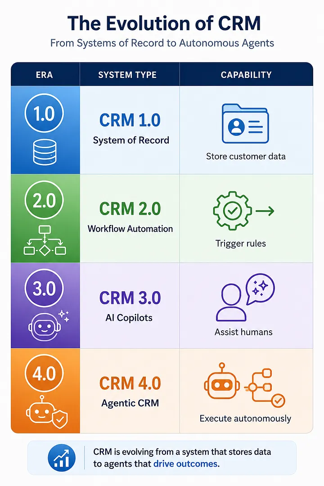
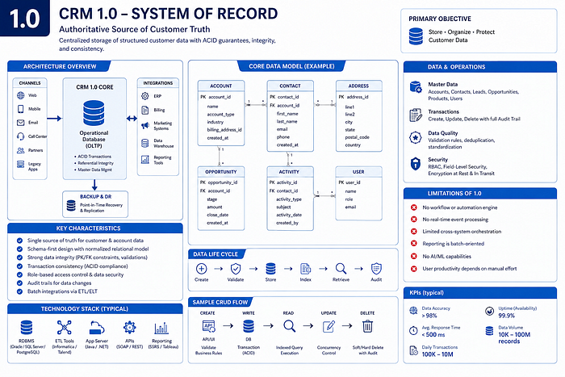
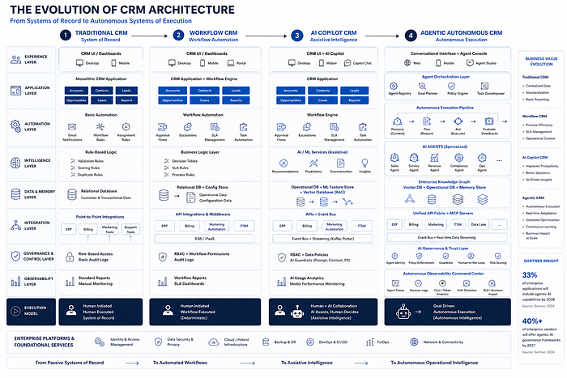
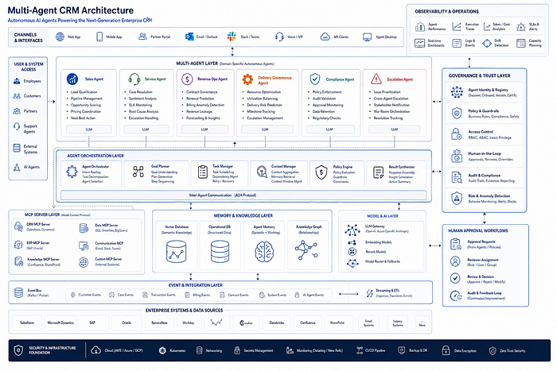
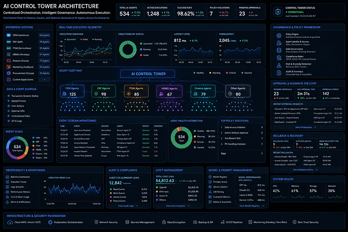
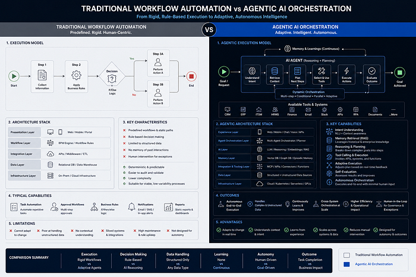
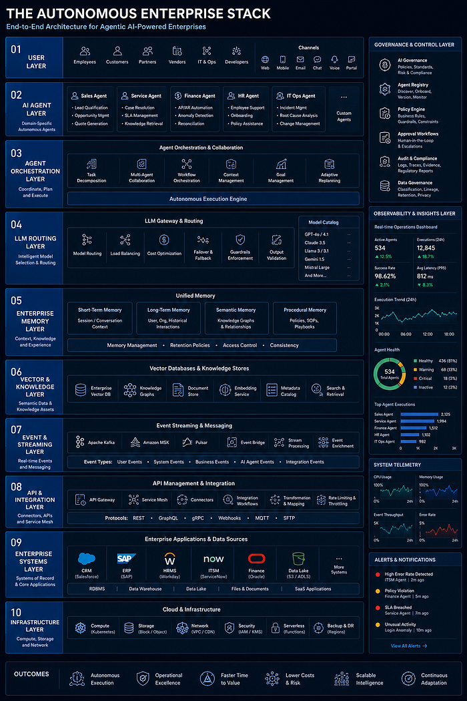

For nearly two decades, CRM platforms have been the operational backbone of enterprise customer engagement. Salesforce transformed pipeline management. Microsoft Dynamics connected productivity with customer data.
HubSpot democratized CRM for growth teams. SAP and Oracle embedded CRM into enterprise operations.
Yet despite billions spent on CRM transformation programs globally, one fundamental problem still remains unsolved:
Traditional CRM systems are passive systems of record — not active systems of execution.
They store information. They visualize workflows. They generate dashboards. They trigger predefined automations.
But they do not truly operate.
The enterprise world is now entering a new phase:
the shift from workflow automation to autonomous operational intelligence.
This is where Agentic AI fundamentally changes the future of CRM.
The Core Problem With Traditional CRM#
Traditional CRM systems were designed around a human-centric execution model.
The architecture assumes:
This model breaks at enterprise scale.
Modern enterprises generate:
Traditional CRMs were never architected for autonomous decision orchestration.
Instead, enterprises built:
These solved symptoms — not the core limitation. The CRM remained fundamentally reactive.
The Shift From Automation to Agency#
The enterprise AI industry is currently undergoing a massive architectural transition:

This transition is not incremental.
It is architectural.
Copilot AI assists users.
Agentic AI performs work.
That difference changes everything.
According to Gartner research, 33% of enterprise applications are expected to include agentic AI capabilities by 2028, while autonomous decision-making inside enterprise systems is projected to rise sharply over the next three years. (Reuters)
Evolution of CRM Architecture#


Why Copilot AI Is Not Enough#
Most enterprises today are still deploying “assistive AI.”
Examples include:
These systems improve productivity. But they do not eliminate operational complexity.
An enterprise support case still requires:
A copilot can suggest.
An agentic system can execute.
This distinction is now becoming the defining competitive battleground across enterprise software vendors.
Salesforce’s Agentforce strategy is positioning autonomous agents as operational workers, while Microsoft’s Copilot strategy focuses more heavily on embedded assistance within productivity flows. (FinancialContent)
The Future CRM Will Be a Multi-Agent System#
The future CRM will not be a monolithic application. It will become an orchestrated network of specialized AI agents.
Examples include:
Sales Agents#
Customer Service Agents#
Revenue Operations Agents#
Delivery Governance Agents#
Compliance Agents#
The CRM becomes: not a database, but an enterprise operational nervous system.
Multi-Agent CRM Architecture#

The Real Enterprise Challenge: Governance#
The biggest challenge in Agentic CRM is not intelligence. It is governance.
Autonomous systems introduce entirely new operational risks:
This is why AI governance will become a first-class enterprise architecture layer.
Future enterprise CRM stacks will require:
Without governance, agentic CRM becomes operationally dangerous.
Reuters recently reported Gartner’s projection that over 40% of current agentic AI initiatives may fail due to unclear business value, weak governance, and immature execution models. (Reuters)
This warning is important.
The future belongs not to companies that deploy the most AI —
but to those that operationalize AI responsibly.
The Rise of AI Control Towers#
One of the most important enterprise architectural patterns emerging today is the AI Control Tower.
This acts as:
The AI Control Tower will manage:
In many ways,
future enterprise operations teams will resemble cloud operations centers —
except they will manage autonomous digital workers instead of infrastructure.
AI Control Tower Architecture#

Data Quality Becomes Existential#
Traditional CRM systems tolerated bad data.
Agentic systems cannot.
An autonomous system executing against incorrect customer, contract, SLA, or operational data can create enterprise-wide failures at machine speed.
This changes the economics of enterprise data management.
Future CRM architecture will require:
In the agentic era:
Data quality stops being an analytics problem and becomes an operational survival problem.
Why RPA and Workflow Engines Will Decline#
For years, enterprises attempted to solve operational inefficiency using:
But these systems struggle with:
Agentic AI changes this entirely.
Instead of rigid workflows, agents dynamically reason through operational objectives.
This transition mirrors the shift from:
static web pages → intelligent applications.
The same evolution is now happening inside enterprise systems.
Traditional Workflow vs Agentic Execution#

CRM Is Becoming an Autonomous Operating System#
The most important realization enterprises must understand is this:
CRM is no longer becoming a customer management platform.
It is becoming an enterprise operating system.
Customer operations now intersect with:
This is why the future architecture of CRM will increasingly converge with:
The enterprise application layer itself is being rewritten.
The Winners of the Next Enterprise Era#
The next decade of enterprise software will likely be dominated by platforms that can combine:
Intelligence#
Reasoning and planning capabilities.
Autonomy#
Multi-step execution without constant human intervention.
Governance#
Enterprise-grade auditability and policy enforcement.
Interoperability#
Cross-platform orchestration through APIs, MCP, and event systems.
Memory#
Persistent contextual understanding across workflows.
Observability#
Operational monitoring for autonomous execution systems.
The winners will not merely provide software.
They will provide autonomous enterprise capability.
The Autonomous Enterprise Stack#

Final Thought#
Traditional CRM systems are not disappearing because they failed.
They are disappearing because enterprise operational complexity has exceeded the limits of human-driven workflow systems.
The future enterprise will increasingly rely on:
In that world,
CRM systems that remain passive systems of record will become obsolete.
The future belongs to autonomous enterprise platforms.
The future belongs to Agentic CRM.
And the transformation has already begun.